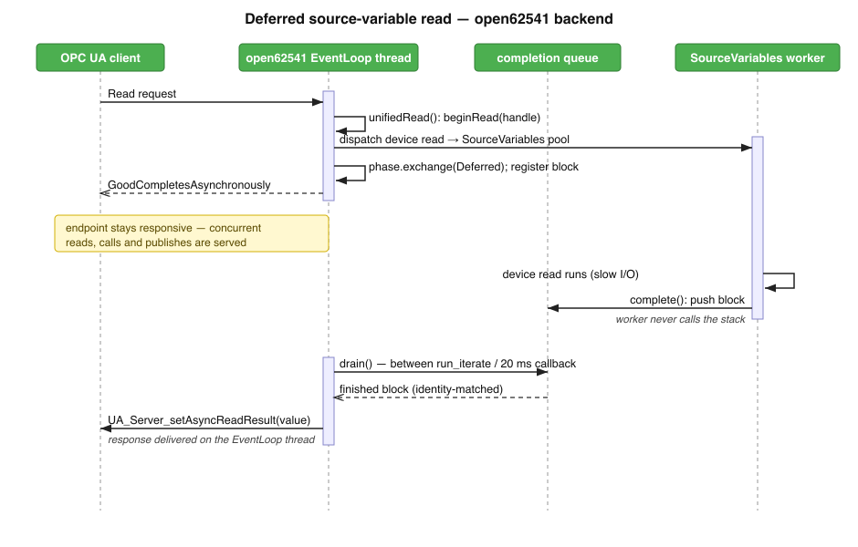

A quasar server can be built against either OPC UA back-end: the commercial Unified Automation C++ SDK (UA SDK), or the free and open-source open62541, reached through the open62541-compat compatibility layer. Feature parity means that the same quasar server, compiled against open62541-compat, behaves identically to the one compiled against the UA SDK: the same OPC UA address space, the same node ids, browse names, references, data types, access levels and timestamps, and the same results from read, write and method-call operations.
Parity is an engineering property of the compatibility layer, not a claim. It was verified across the full set of production servers by building each server twice -- once per back-end -- and comparing, between the two builds, the served address space node-for-node and the outcomes of read, write and method calls. The served address spaces and the operation results match. This document records what open62541-compat had to implement to reach that point, organised by the two areas where the back-ends used to diverge: observable address-space and type fidelity, and asynchronous I/O.
The work spans open62541-compat 1.5.0 through 1.5.7. The 1.5 port moves the bundled stack to open62541 1.5.4 and is anchored by asynchronous read/write/call completion -- the feature that motivated the port and that closes the last behavioural gap against the UA SDK.
The UA SDK fixes a set of observable behaviours -- status-code names, node-id string formats, property namespaces and access levels, type semantics, timestamps -- that quasar servers and their clients depend on. open62541-compat now matches each of them. Most of these were latent divergences that surfaced as production incidents: regex parsers segfaulting on the wrong node-id shape, address-space walks counting nodes multiple times, properties served with the wrong namespace or write access. The table below lists the parity items; each is verified against UA SDK 1.6.5 headers and carries a regression test.
| Parity item | UA SDK behaviour, now matched |
|---|---|
| Status-code aliases | Effectively the full OpcUa_*
status-code family plus
UaStatus with code() /
statusCode() / toString() /
isGood(). open62541-compat carries 242
OpcUa_* aliases in total, 214 of them generated
from the stack's UA_StatusCode_name table plus a
hand-curated core set. Partial aliasing
previously broke production servers. |
| Node-id string format | toFullString() renders
NS<ns>|<Type>|<id> (e.g.
NS2|String|elmb1.address,
NS0|Numeric|85); toString() returns
the bare identifier. The old parenthesised
(ns=2,...) shape was regex-hostile and segfaulted
an eltek phase-lookup that indexed an empty match.
Numeric/String/Opaque/Guid are all handled. |
| Property browse-name namespace | A property under ns2 browses as
2:name: the property browse-name namespace
follows the node id rather than being hardcoded to ns0.
Hardcoding 0 produced 0:name where the UA SDK
serves 2:name (hundreds to over a thousand
mismatched node pairs on real servers). Method
Input/OutputArguments stay ns0 on both back-ends. |
| Property access level | The access level passed to the
UaPropertyCache constructor is applied to the
served property node at AddNode. It was previously discarded,
so every property exposed StatusWrite/TimestampWrite where the
UA SDK serves CurrentRead only. |
| ByteString semantics | UaVariant::toByteString returns a
status code (BadTypeMismatch on mismatch, never
throws) and round-trips both a ByteString scalar and a Byte
array into a UaByteString, honouring the
empty-array sentinel. |
| Empty/null typed values | An empty 1-D array stays an array, not a
scalar or null (UA_Array_new(0, ...) sentinel;
isScalarValue() excludes it). Typed null-value
variables are accepted at AddNode
(allowEmptyVariables = UA_RULEHANDLING_ACCEPT);
open62541 1.5 otherwise rejects them, crashing servers that
declare nullForbidden cache variables without an initial
value. |
| Server status | UaClient::ServerStatus enumerates
Disconnected / Connected /
ConnectionWarningWatchdogTimeout /
ConnectionErrorApiReconnect / ServerShutdown /
NewSessionCreated, and UaSession::serverStatus()
reports the live connection state (mapped from
UA_Client_getState) for client supervision
loops. |
| hvsys-class API surface | A verified subset of the broad UA SDK surface
that hvsys-class servers compile against:
UaString::toUtf8(),
UaQualifiedName(name, ns),
UaNode::getTargetNodeByBrowseName /
getUaReferenceLists, the
UaVariable abstract base,
UaVariant::changeType, UaDataValue
setters/getters, UaDateTime::toTime_t/fromTime_t,
plus the forwarding headers and access-level constants. |
| Timestamp order | UaDataValue(variant, statusCode,
sourceTime, serverTime) takes source before
server. The constructor parameter order was swapped to
match, fixing silently transposed source/server timestamps at
every construction site. |
| Single reference registration | Each node's reference list is populated once.
The compat layer stopped duplicating
addReferencedTarget calls (quasar's
ASNodeManager already populates them); doubling the edges
broke recursive address-space walks that then counted nodes
multiple times. |
This is the central piece of the parity work. Under the UA SDK a device read, write or method body can complete off the stack thread and be delivered later; the bundled open62541 could not. open62541-compat now provides the same contract: slow device I/O no longer stalls every session, subscription and publish on the endpoint, because the operation is deferred off the single EventLoop thread and completed when the device returns.
The mechanism only exists in open62541 1.5. The bundled stack is
now open62541 v1.5.4, amalgamated with
-DUA_MULTITHREADING=100 (baked in at amalgamation
time). 1.5 introduces per-invocation deferral: a DataSource or
method callback returns
UA_STATUSCODE_GOODCOMPLETESASYNCHRONOUSLY and the
result is posted later through three thread-safe completion
functions -- UA_Server_setAsyncReadResult,
UA_Server_setAsyncWriteResult,
UA_Server_setAsyncCallMethodResult -- with
cancellation delivered through the config's
asyncOperationCancelCallback. The pre-1.5 bundle could
not defer read or write at all: only CALL existed in the async
enum, READ and WRITE were commented-out placeholders, and the
completion functions did not exist in usable form, so a callback
had to fill the result before returning. UA_MULTITHREADING
>= 100 is the precondition for calling the completion
functions safely.
Deferral is opt-in on OpcUa::BaseDataVariableType and
default-off, so cache variables keep their synchronous fast path
(no async block, no handshake). The
seam is three virtuals:
virtual OpcUa_Boolean handlesIo() const { return OpcUa_False; }
virtual void beginRead(AsyncReadHandle handle) { handle.complete(value(nullptr)); }
virtual void beginWrite(const UaDataValue& dataValue, AsyncWriteHandle handle)
{ handle.complete(setValue(nullptr, dataValue, OpcUa_True)); }
The default beginRead/beginWrite
complete inline immediately. A subclass that returns
handlesIo() == true and dispatches the handle to a
worker thread gets deferral. Methods do not use this seam:
unifiedCall always allocates a block and hands it to
the receiver's beginCall as the
MethodManagerCallback.
One primitive serves all three operations. An
AsyncOperationBlock (heap, shared_ptr-owned)
carries the back-pointer to AsyncOperations, the
stack's identifying pointer as the key (the
UA_DataValue* target for a read, the
const UA_DataValue* for a write, the
UA_Variant* output array for a call), the payload
slot, and a single-word std::atomic<int> phase
with Phase { Initial=0, Finished=1, Deferred=2 }.
Completion is a release/acquire handshake on that atomic that
guarantees exactly one completer on every interleaving -- including
the race where the worker finishes before the glue regains control.
The completing side stores the payload then
exchange(Finished); if the prior value was
Deferred it pushes the block to the completion queue.
The glue side, after begin*, does
exchange(Deferred): if the prior value was
Finished it consumes the result inline and returns
the operation's result (GOOD for a successful read); otherwise it
registers the block and returns
GOODCOMPLETESASYNCHRONOUSLY.
if (variable->handlesIo() && operations && operations->deferralActive())
{
std::shared_ptr<AsyncReadBlock> block = std::make_shared<AsyncReadBlock>(operations, dataValue);
variable->beginRead(AsyncReadHandle(block));
if (block->phase().exchange(AsyncOperationBlock::Deferred) == AsyncOperationBlock::Finished)
{
block->finishInline();
return UA_STATUSCODE_GOOD;
}
operations->establishDeferral(block);
return UA_STATUSCODE_GOODCOMPLETESASYNCHRONOUSLY;
}
The read/write handle destructors complete with
OpcUa_BadInternalError if dropped without
complete(), so a misbehaving subclass cannot leave the
stack waiting forever. Method output copy is bounded by
min(stored, arity) to stay in range for throwing
methods.
Workers never touch the stack. The only worker-side action is
push() onto a compat-owned completion queue (a mutex
plus a vector); push() appends the block, decrements
the inflight counter, and notifies a condition variable. The actual
completion -- the result-memory write plus the
UA_Server_setAsync*Result call -- happens in
drain(), which runs on the EventLoop thread,
where it is serialised with cancellation by construction.
Drain runs at two points: between
UA_Server_run_iterate calls in the run thread, and
from a 20 ms repeated server callback. Calling the completion
functions from inside the repeated callback is legal because the
server locks are reentrant. Deferred-completion latency is
therefore bounded by one drain period (≤ 20 ms) on an
otherwise idle server. Per-server reach is via
config->context, which holds the
AsyncOperations instance.
Cancellation arrives through the config's
asyncOperationCancelCallback;
cancel() erases the registry entry by key and touches
nothing else. There is an ABA hazard: after cancellation the stack
may reuse the same key pointer for a new operation, so a key match
alone is insufficient. drain() therefore completes an
entry only when the key is present and the registered block
is the same object:
for (auto& block : batch)
{
auto it = m_pending.find(block->key());
if (it == m_pending.end() || it->second != block)
{
LOG(Log::INF) << "Dropping completion of a cancelled asynchronous operation";
continue;
}
block->finishDeferred(server);
m_pending.erase(it);
}
Pointer-identity of the compat-owned shared_ptr --
which the allocator cannot recycle while still referenced -- closes
the hole. A cancelled operation resolves cleanly: the registry
entry is erased by cancel(), the worker still pushes
into the queue, drain finds no matching identity and drops, and the
block frees by refcount. The pending registry is mutated only on
the EventLoop thread (creation, cancellation, consumption), so only
the queue and inflight accounting need the mutex.
Deferral is gated on the server's serving state. The glue defers
only when handlesIo() && operations &&
operations->deferralActive(), where
deferralActive() is m_serving &&
!m_closed. m_serving is set after
linkServer/afterStartUp and before
UA_Server_run_startup. This is the parity-preserving
detail: stack-internal AddNode-time reads must complete
synchronously, so before the gate opens reads and writes take the
synchronous fallback path. Once m_closed is set in
shutdown the gate refuses new deferrals (reads/writes fall back to
sync, calls return BadOutOfService), which matters
because the shutdown iterations can still deliver client
requests.
Wiring at start(): construct
AsyncOperations → set
config->context → set the cancel callback →
register the 20 ms drain callback →
linkServer/afterStartUp →
setServing() → UA_Server_run_startup
→ spawn the run thread.
Inflight is incremented under the queue mutex when a deferral is
established and always decremented at worker resolution (on
completion push, or on drop-when-closed). Shutdown sets
m_closed and waits on the condition variable for
inflight to reach zero, with a 60 s timeout and a loud error
on expiry, then does a final drain while the server is still alive.
All async state is per-UaServer (reached via
config->context, no static state), so multiple
in-process servers stay isolated.

unifiedRead allocates a
block and calls beginRead(handle).phase().exchange(Deferred). The
worker has not finished, so it registers the block and returns
GoodCompletesAsynchronously to the client. The
endpoint stays responsive -- concurrent reads, calls and
publishes are served on the EventLoop thread.complete(), which stores the value
and pushes the block onto the completion queue. The worker never
calls the stack.run_iterate calls or on
the 20 ms callback) the EventLoop thread pops the block,
confirms the registry entry matches by identity, and calls
UA_Server_setAsyncReadResult. The response is
delivered to the client on the EventLoop thread.quasar dispatches device work through a single process-wide worker
pool -- Quasar::ThreadPool, the SourceVariables thread
pool -- created once at startup by Meta's
DSourceVariableThreadPool and fetched everywhere via
SourceVariables_getThreadPool(). Both back-ends share
this one pool. Dispatch policy is driven by Design.xml attributes
and is identical under both back-ends: async-declared
reads/writes/methods queue to the pool and run on a worker;
sync-declared ones run inline in the calling thread. For source
variables a configured mutex is held while the device delegate runs
(inline for sync, inside the worker for async) so serialization
matches regardless of synchronicity or back-end. Synchronous
methods do not lock the configured method mutex
(addressSpaceCallUseMutex applies to asynchronous
handlers); this too is identical on both back-ends.
This mirrors the UA SDK IoManager job model directly. Under the UA
SDK, I/O reaches ASSourceVariableIoManager, which calls
SourceVariables_spawnIoJobRead/Write; that constructs a
generated IoJob (a
Quasar::ThreadPoolJob) and either runs
job.execute() inline (synchronous job ids) or hands it
to sourceVariableThreads->addJob(...) (asynchronous job
ids). The open62541 back-end reimplements the same contract in
ASSourceVariable::beginRead/beginWrite: it builds an
equivalent work lambda and either runs it inline under the optional
mutex (sync) or dispatches it via
SourceVariables_getThreadPool()->addJob(work, description,
mutex) (async). The async-method handler in the generator is
not guarded by back-end -- it compiles identically for both and
dispatches to the same pool. Cache variables are pure in-memory
address-space state with no device dispatch and no pool under either
back-end.
| Node flavor | UA SDK | open62541 |
|---|---|---|
| Cache variable | In-memory address-space access; no dispatch, no mutex, no pool. | Same: in-memory, no dispatch. |
| Source variable, async | spawnIoJobRead/Write news an
asynchronous IoJob and calls
sourceVariableThreads->addJob(job); runs on a
pool worker, mutex via
associatedMutex(). |
beginRead/beginWrite →
getThreadPool()->addJob(work, desc, mutex); runs
on a pool worker, mutex held in the worker. Same pool. |
| Source variable, sync | spawnIoJobRead/Write constructs a
synchronous IoJob and calls
job.execute() inline in the calling thread,
under the job's mutex. |
Work lambda run inline in the calling thread,
under unique_lock(*mutex) when configured. |
| Method, async | Generator handler (unguarded) dispatches via
getThreadPool()->addJob(lambda, desc, mutex);
pool worker, mutex per
addressSpaceCallUseMutex. |
Identical code path, same pool, same mutex selection. |
| Method, sync | Device call runs inline in the call thread. | Identical: inline in the call thread. |
Every cell is behaviorally identical across the two back-ends. Async source-variable and async method work share the one SourceVariables pool.
The deferred read path preserves the requested
TimestampsToReturn policy: the merge into the target
data value polices timestamps on the deferred path while the inline
path leaves them as produced. The
UaDataValue constructor orders source before server,
so source and server timestamps land in the correct fields on both
back-ends.
Because deferred completions are issued on the EventLoop thread and the worker never touches the stack, sampling, subscription and publish are unaffected by a slow device read: while one operation is in flight on a worker, the EventLoop thread continues to service other sessions, monitored items and publish requests. This is the observable difference the async work delivers -- a slow device no longer freezes the endpoint.
The deferral seam (handlesIo /
beginRead / beginWrite) is for source
variables only. Methods always allocate a block and go through
beginCall, but a synchronous method still runs its
device body inline in the call thread under both back-ends -- only
async-declared methods are dispatched to the pool. The block
machinery is uniform; the synchronicity is decided by the Design,
not by the seam.